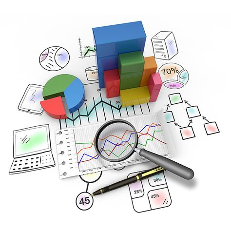

SQL • ETL • Data Pipelines
Cleaned and standardized a large-scale real estate transactions dataset covering Abuja and Lagos property markets using SQL Server. Applied deduplication, null imputation, address normalization, and data type corrections across 50,000+ records, establishing a reliable, analysis-ready foundation. Techniques used include CTEs, CASE statements, string functions, and bulk ETL transformations that mirror real-world data pipeline workflows.
SQL • Statistics • Healthcare

Explored Nigeria's COVID-19 dataset using advanced SQL techniques including CTEs, window functions, and multi-table joins to analyze state-level infection rates, case fatality ratios, and vaccination coverage across the six geopolitical zones. Applied statistical aggregations to surface peak transmission periods and regional disparities aligned with NCDC public health reporting standards.
R • ggplot2 • Statistics • Healthcare • NDHS
End-to-end R analysis of Nigerian maternal and child health indicators using an NDHS-style dataset of 5,000 respondents across all 36 states and FCT. Covers data cleaning with dplyr, exploratory analysis of ANC coverage, facility delivery, and immunization rates, seven publication-quality ggplot2 visualizations, and statistical analysis including chi-square tests, ANOVA, t-tests, and logistic regression to identify key determinants of health-seeking behaviour.
Tableau • Data Storytelling • Healthcare
Built an interactive Tableau dashboard visualizing maternal mortality rates, antenatal care coverage, and child immunization uptake across Nigeria's 36 states and FCT using NDHS and HMIS datasets. Enabled health programme officers to identify high-risk LGAs, track SDG progress, and present findings to donor partners through compelling data storytelling.
Excel • Power Query • Business Analysis
Analyzed sales data for a Lagos-based retail chain using Excel pivot tables, Power Query, and dynamic charts. Identified top-performing customer segments by age bracket and region, including Lagos, Abuja, and Port Harcourt, revealing seasonal demand spikes and informing targeted inventory restocking decisions that improved stock availability by over 20%.
Python • Statistics • Healthcare
Built a Python health screening pipeline using pandas and numpy to analyze BMI distributions across a Nigerian population dataset. Automated data ingestion, cleaning, and WHO BMI classification, then applied descriptive statistics and regression analysis to identify obesity risk factors by age group and geopolitical zone. Statistical anomaly detection was applied to flag outliers and accelerate clinical insight generation.
Power BI • DAX • Healthcare • PEPFAR
Designed a Power BI dashboard analyzing Early Infant Diagnosis (EID) data for HIV-exposed infants across Nigeria's six geopolitical zones. Advanced DAX measures track testing coverage rates, positivity ratios, and sample-to-result turnaround times. The dashboard directly supported PEPFAR-funded intervention teams in prioritizing high-burden states for accelerated EID scale-up, contributing to Nigeria's 95-95-95 HIV targets.
Power BI • DAX • HR Analytics
Built a Power BI dashboard profiling HR data for Nigerian organizations across healthcare, banking, and oil & gas sectors. Analyzed workforce demographics, educational qualifications, salary bands, and department distributions using advanced DAX. Delivered actionable talent acquisition and retention insights that supported strategic workforce planning for senior HR leadership teams.
Power BI • DAX • Supply Chain • ETL
Developed a Power BI supply chain and sales dashboard for a Nigerian FMCG company, tracking inventory levels, distributor performance, and sales velocity across Lagos, Abuja, Kano, and Port Harcourt. Identified recurring stock-out patterns in Northern distribution routes and built DAX-driven reorder triggers that reduced supply disruptions, directly improving on-shelf product availability.
Power BI • Data Storytelling • Retail
.jpg)
Power BI report analyzing yuletide season sales performance for a Nigerian retail brand, tracking product category trends, regional demand surges across Lagos and the South-East, and customer purchase behaviour during the festive period. Interactive storytelling visuals helped the marketing team optimize promotional budgets and align stock allocation with actual demand patterns.
Power BI • DAX • Statistics • Finance • Award Winner
.jpg)
Award-winning Power BI dashboard (ZoomCharts Global Challenge, August 2024) built for a Nigerian financial services firm. Features dynamic income statement, balance sheet, and cash flow analysis using advanced DAX, with ZoomCharts interactive drill-downs enabling executives to interrogate P&L variances at entity, product, and period level. Statistical trend analysis and year-on-year comparisons informed multi-million naira strategic planning decisions.
Power BI • DAX • Finance • CBN Compliance
Power BI debtor management dashboard for a Nigerian microfinance institution, monitoring outstanding loan portfolios across aging buckets (30/60/90+ days), repayment trends by customer segment, and branch-level collection efficiency. Enabled the credit team to prioritize high-risk accounts, reduce non-performing loan (NPL) ratios, and strengthen compliance reporting submitted to the Central Bank of Nigeria (CBN).
Power BI • DAX • Cloud Analytics • Banking • Award Winner
Contest-winning Power BI banking dashboard for Aurora Bank featuring customer segmentation, loan performance analysis, deposit growth trends, and live KPI monitoring. Connected to cloud-based data sources (Azure) for automated refresh, ensuring executives had real-time, accurate reporting at all times. Advanced DAX measures powered dynamic benchmarking against industry peers, supporting board-level decision-making.
Excel • Power Query • Finance
Automated P&L workbook for a Nigerian SME in the FMCG sector, consolidating revenue streams, cost of goods sold, and operating expenses across quarterly periods. Power Query pipelines handle automated data refresh and ETL, while macro-enabled dashboards reduced monthly financial reporting time from 3 days to under 2 hours, freeing the finance team to focus on analysis over administration.
Excel • Project Management • NGO / Health
Excel task tracking dashboard for a Nigerian NGO managing community health interventions across Kano, Borno, and Bauchi states. Tracked deliverables, responsible officers, completion rates, and timelines across five concurrent programme workstreams, enabling programme managers to generate progress reports for USAID and UNICEF partners within minutes.
Excel • Power Query • Healthcare • Finance
Excel budget tracking dashboard for a Nigerian public health programme, monitoring expenditure against FMOH-allocated funds across primary healthcare, routine immunization, and nutrition supplementation. Power Query pipelines consolidated data from multiple state-level reports into a single national dashboard reviewed by programme directors and donor agencies.
Excel • Healthcare • Compliance • Operations
Excel health and safety monitoring dashboard for a Nigerian manufacturing facility in Ogun State, tracking incident rates, near-miss reports, Lost Time Injuries (LTIs), and compliance metrics aligned with the Nigerian Factories Act and NAFDAC regulatory standards. Enabled the HSE manager to generate monthly board-level safety reports automatically, reducing manual reporting effort significantly.
Excel • Power Query • Marketing Analytics
Excel marketing analytics dashboard for a Nigerian telecommunications company, tracking campaign ROI, customer acquisition cost (CAC), and channel performance across digital, outdoor, and radio media. Power Query automated data pulls from multiple campaign sources, enabling the marketing team to identify underperforming channels and reallocate budgets with data-driven confidence.
Excel • Project Management • Operations
Excel project tracking dashboard for a Federal Government-funded infrastructure development initiative in Nigeria, monitoring milestone completion rates, contractor deliverables, cost-against-budget variances, and risk flags across multiple states. Used by project directors to produce weekly status reports for the supervising Federal Ministry.
Excel • Power Query • Multi-Project Management
Comprehensive Excel project management dashboard for a Nigerian management consulting firm, tracking resource allocation, timeline adherence, risk status, and budget utilization across 12 concurrent client engagements. Power Query automated the consolidation of individual project trackers into one unified executive view, saving the operations team hours of manual collation weekly.
Excel • Supply Chain • ETL • Pharma
Excel supply chain dashboard for a Nigerian pharmaceutical distribution company, monitoring stock levels, supplier lead times, and delivery performance across Northern and Southern hubs including Kano, Lagos, Abuja, and Port Harcourt. Identified slow-moving medicines and expiry risks, enabling procurement teams to optimize reorder cycles, reduce waste, and maintain NAFDAC compliance across the distribution network.
Excel • Healthcare • Data Storytelling • Reporting
Excel weekly status reporting dashboard for a Nigerian State Ministry of Health, consolidating KPIs submitted by LGA-level health officers across the six geopolitical zones into a single executive summary. Automated conditional formatting and chart updates ensured the dashboard required minimal manual intervention and could be refreshed within minutes of receiving new field data, enabling timely decisions by senior health officials.